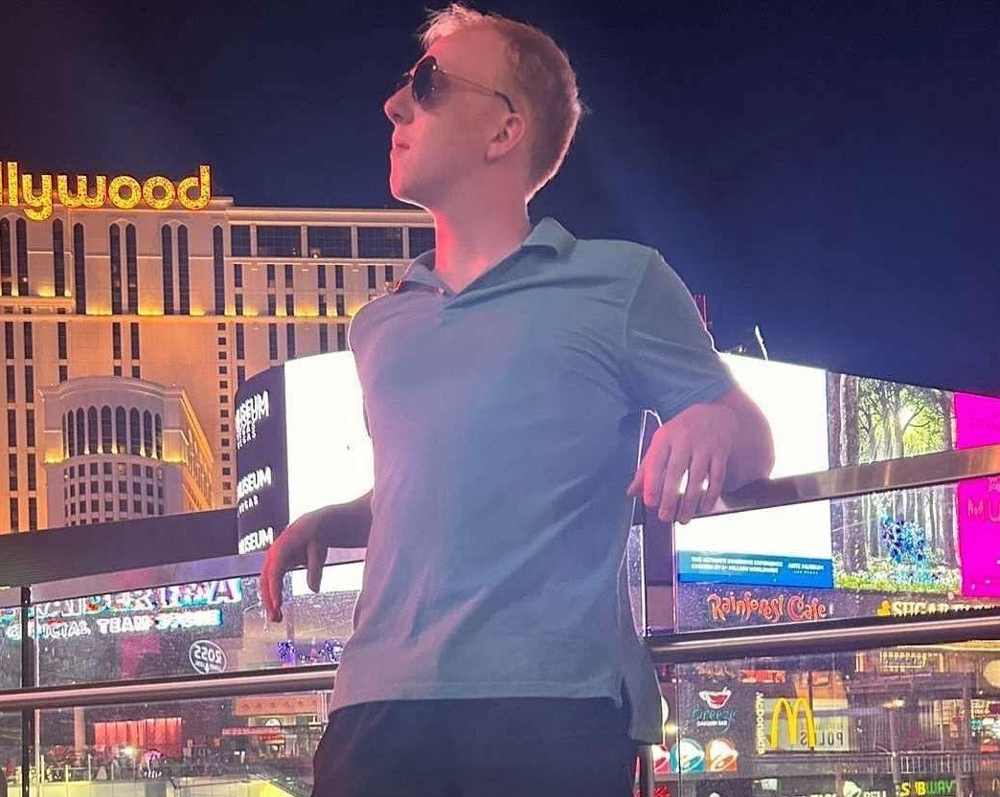
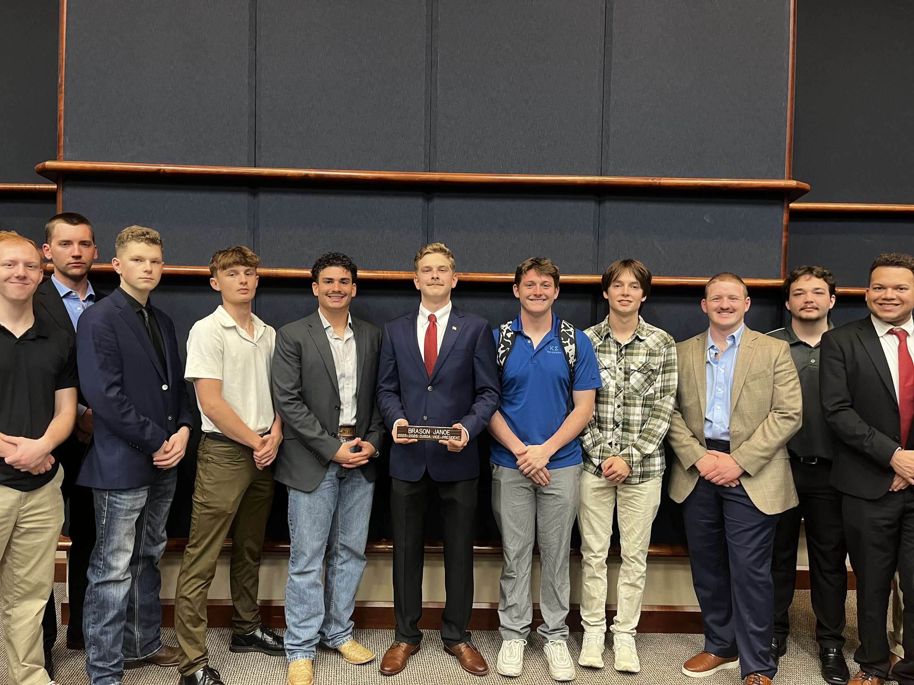
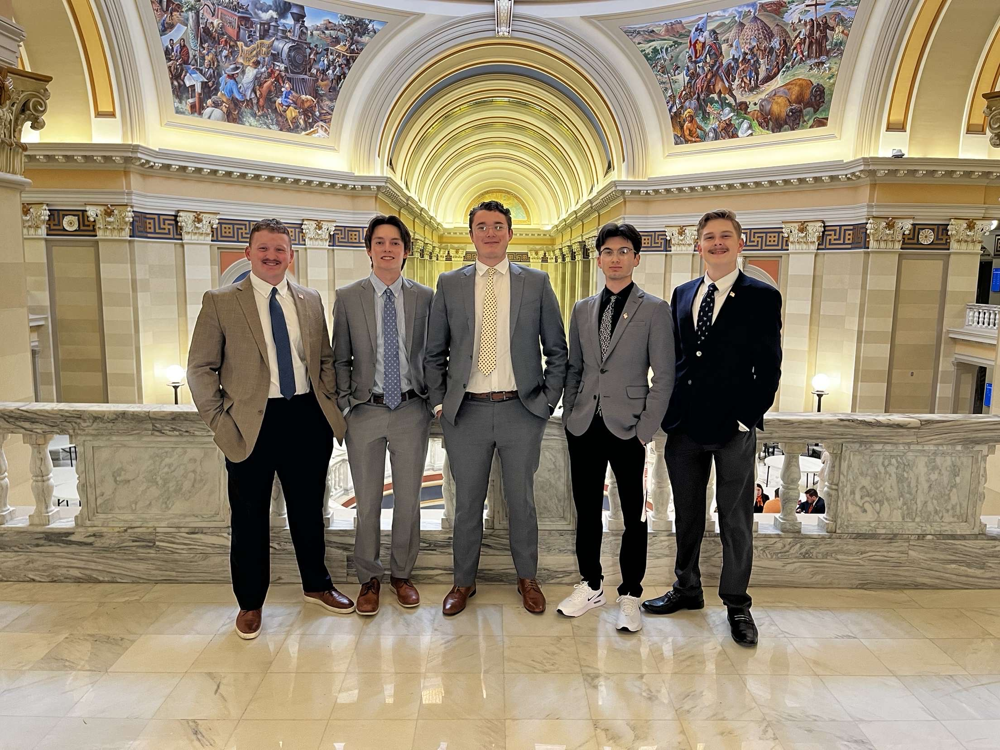
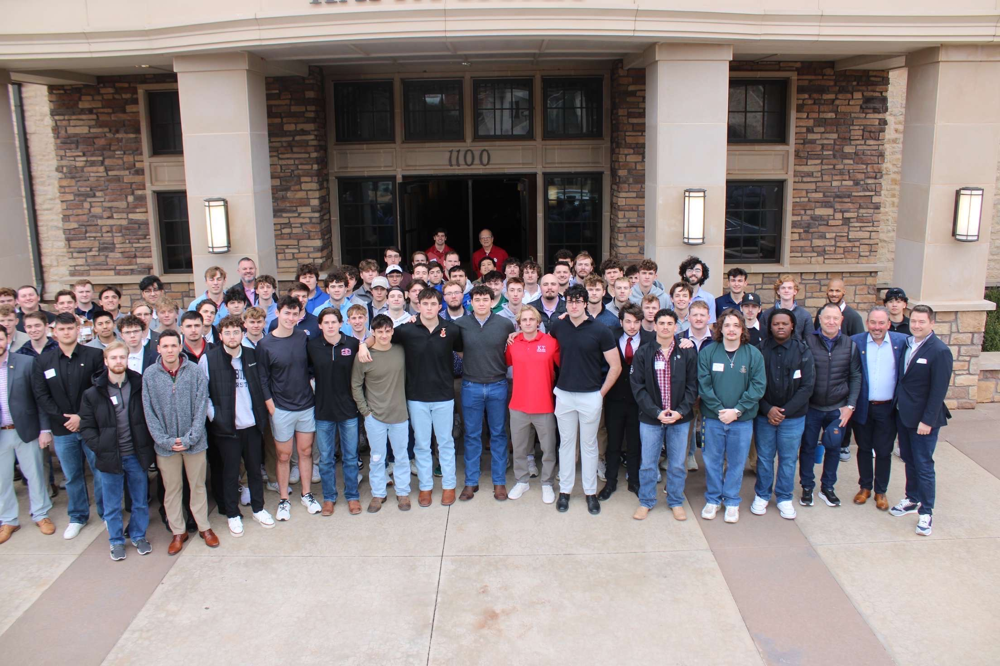
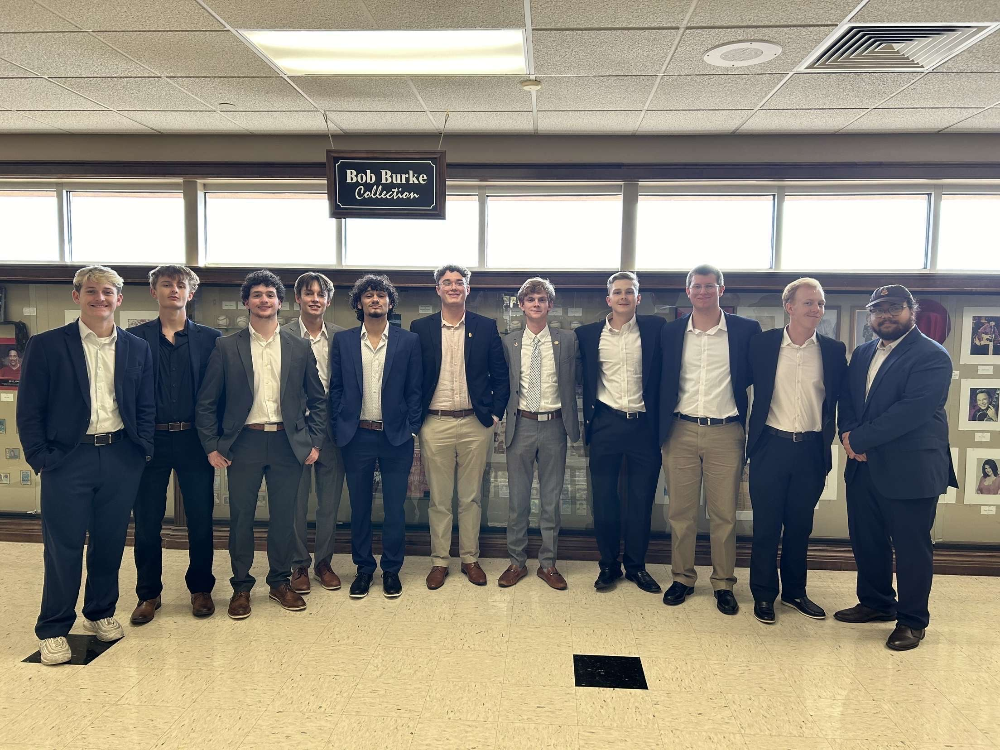

August 1, 2025
Brother Of The Month

The brother of the month for August is Justin "Double Barrel" Harril. Justin is a Criminal Justice
major from Lawton Oklahoma. He is in ROTC and plans to commission as an officer in the army when he graduates.
Justin also serves as BIA chair, and recently attended the 75th Biennial Grand Conclave in Las Vegas.
"I'm blessed to be a part of a fraternity that makes me feel like I truly belong. No matter what happens, I know I can
count on my brothers to have my back."
- Justin Harril
April 8, 2025
Brason's SGA
VP Inauguration

One of our brothers, Brason Janoe was inaugurated into the Vice President officer position for the Student
Group Association (SGA) at Cameron University. Huge Congratulations for brother Janoe, this is a huge win
for the Phi-Gamma chapter.
April 8, 2025
57th Oklahoma
intercollegiate Legislature

Our brothers had the honor of participating in the 57th Oklahoma intercollegiate Legislature.
Februrary 9, 2025
2025 Kappa Sigma Heart
of America Conclave

The 2025 event was hosted by the Kappa Sigma chapters at the University of Oklahoma (kappasigmaou).
The event focused on promoting personal and professional development, honoring those who have helped
the fraternity, and bestowing awards.
November 18, 2024
Installment of the Kappa-Pi
Chapter at UCO

The brothers of the Phi-Gamma chapter traveled to the Univerity of Centeral Oklahoma (UCO)
in Edmond, Oklahoma for the installment of the Kappa-PI Chapter.